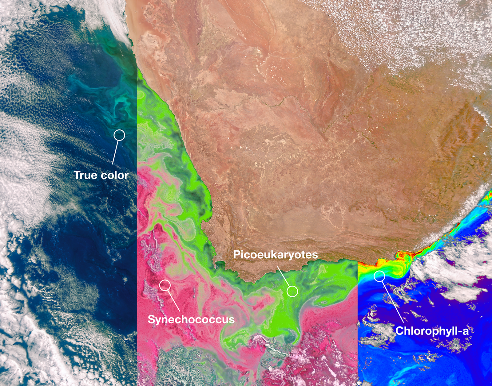

PACE Missions
-
Ocean Color Monitoring
PACE is designed to monitor the color of the oceans, providing valuable data on marine biology, phytoplankton levels, and oceanic ecosystems.
Read More -
Cloud and Aerosol Observation
One of PACE's key missions is to track aerosols and clouds, analyzing their impact on Earth's climate by studying how they scatter and absorb sunlight.
Read More -

Tracking Harmful Algal Blooms
PACE provides critical information for monitoring and predicting harmful algal blooms, which can threaten marine life and coastal economies.
Read More -

Studying Global Biogeochemical Cycles
PACE data helps scientists understand the interaction between oceans, the atmosphere, and the global carbon cycle, providing insights into Earth's changing climate.
Read More